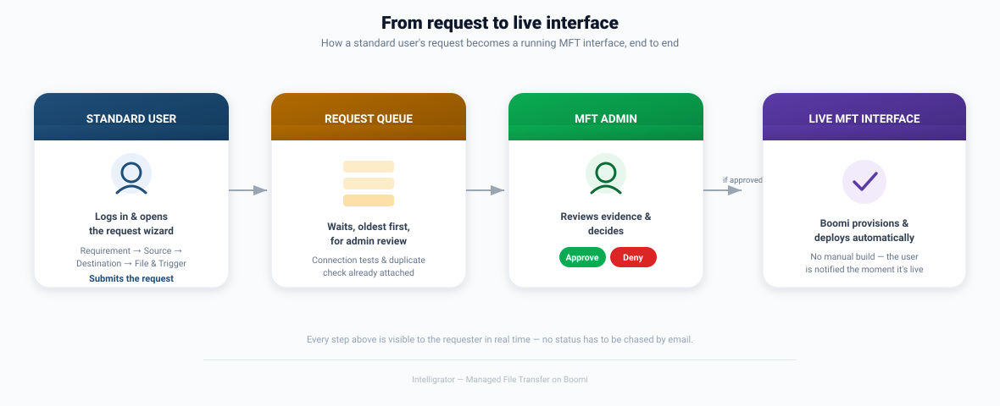

As a standard user, I want to log in and see my own requests so that I always know where things stand without asking anyone.
Section 1
Purpose & scope
This document describes Intelligrator's Managed File Transfer (MFT) capability — what it does, who it's for, and how it's built.
Not in scope
This document does not cover Intelligrator's API management or asynchronous/event-driven integration capabilities — those are addressed separately. It also assumes standard platform foundations — sign-on, account administration, and general portal navigation — as a given baseline, rather than describing them here. The focus throughout is MFT, and MFT alone.
Built on Boomi
Intelligrator achieves its vision by combining three Boomi capabilities: Boomi Integration (iPaaS), the process engine that performs every file transfer; Boomi Managed File Transfer, for secure, governed file movement at scale; and Boomi Companion, Boomi's AI-assisted development capability, which accelerates how the platform team builds, tests, deploys, and diagnoses the integrations underneath Intelligrator itself.
Section 2
Product vision
Vision statement
For integration teams and business requesters who need file transfer interfaces built reliably and fast, Intelligrator replaces a multi-week engineering request with a five-minute conversation and an automatic build — turning managed file transfer from something you wait on into something you simply ask for.
Every connection is proven before a request is submitted. Every interface is named and checked for duplicates automatically. Every approval leads straight to a live, deployed interface — with nothing built by hand.
Section 3
Key highlights & features
✅ Prove it before you submit
Source and destination connections — and the folders on them — are tested live in the wizard, not discovered as a failure after delivery.
🔍 No duplicate interfaces
Every request is checked against existing interfaces automatically, before anything is built twice.
🏷️ Consistent naming, automatically
Intelligrator suggests the interface name for you, following a standard convention — no naming guesswork.
⚡ Zero manual build
Approval triggers automatic provisioning on Boomi — the interface is live in minutes, not weeks.
👁️ Full visibility, always
Requesters track their request end to end; nobody has to email to ask "what's the status?"
🛡️ Governed, not gatekept
A human approver still decides — but every piece of evidence they need is already on the screen.
Section 4
Who uses Intelligrator
Three roles cover the full MFT lifecycle:
Standard User
Requests an MFT interface through the wizard, tests connections, and tracks the request through to a live interface — no technical Boomi knowledge required.
MFT Admin
Reviews every request in the queue — with connection evidence and duplicate checks already attached — and approves or denies it.
Platform Engineer
Maintains the underlying Boomi engine, and steps in only when something needs deeper investigation — most requests never need them at all.
Section 5
Request flow
How a standard user's request becomes a live, running interface:

Section 6
End-to-end journey
Standard User — the request wizard
STEP 1Log in
→
STEP 2Requirement details
→
STEP 3Source details
→
STEP 4Destination details
→
STEP 5File & trigger
→
STEP 6Summary & submit
| Step | What happens |
|---|---|
| Log in | The user signs in and lands on a simple dashboard of their own requests. |
| Requirement details | Purpose, business value, and a point of contact — the "why" behind the request. |
| Source details | Where the file comes from — tested live, with the folder confirmed to exist, before moving on. |
| Destination details | Where the file needs to go — tested the same way. |
| File & trigger | What the file looks like, and when the transfer should run. |
| Summary & submit | A plain-English recap of everything entered, then one click to submit into the queue. |
MFT Admin — review to production
STEP 1Log in
→
STEP 2Open the queue
→
STEP 3Approve or deny
→
STEP 4Interface goes live
| Step | What happens |
|---|---|
| Log in | The admin signs in to a queue of everything awaiting a decision. |
| Open the queue | Every request already carries its connection-test results and duplicate-check outcome — no chasing for information. |
| Approve or deny | One decision, with a comment if it's a denial. The requester is notified immediately either way. |
| Interface goes live | An approval is all it takes — Boomi provisions and deploys the MFT interface automatically, with no manual build. |
Section 7
How it works — technical approach
Intelligrator's automation is built on two complementary Boomi capabilities.
Boomi Integration (iPaaS)
A single, reusable process on Boomi's runtime performs the transfer itself: it picks up the file from the source, validates it, delivers it to the destination, and carries out any follow-up action such as archiving the original. Every approved request becomes a configuration entry for this one process, rather than a new process being built each time — which is what makes "no manual build" possible.
Boomi Managed File Transfer
For interfaces that call for it, Boomi's own native Managed File Transfer product provides a governed, secure channel for the transfer — with built-in retry, guaranteed delivery, and encryption at every stage.
Boomi MFT's two applications
| Application | What it's for |
|---|---|
| Automated File Transfer (AFT) | System-to-system, scheduled file transfer — this is the application Intelligrator's MFT interfaces use. |
| File Sharing (FS) | Person-to-person file sharing and collaboration — a different use case, not part of this capability. |
Connecting Boomi Integration to Boomi MFT
A Boomi process interacts with Boomi MFT through a dedicated connector, using two operations:
| Operation | What it does |
|---|---|
| Get | Picks up a file that's waiting to be collected. |
| Create | Drops a file off for delivery. |
The result A requester never sees any of this — they see a wizard, a queue, and a live interface. Everything above happens automatically, the moment a request is approved.
Section 8
User stories
Standard User
US-01MUST
US-02MUST
As a standard user, I want to describe the purpose and business value of my request so that the admin has the context to approve it quickly.
US-03MUST
As a standard user, I want to test my source and destination connections before submitting so that I know the interface will work before anyone builds it.
US-04MUST
As a standard user, I want to be warned if a similar interface already exists so that I don't accidentally request a duplicate.
US-05MUST
As a standard user, I want a plain-English summary before I submit so that I can catch mistakes before they go to review.
US-06MUST
As a standard user, I want to track my request through every stage so that I know the moment it's approved and live.
MFT Admin
US-07MUST
As an MFT admin, I want a single queue of everything awaiting my decision so that nothing gets missed.
US-08MUST
As an MFT admin, I want connection-test results and duplicate checks already attached to each request so that I can decide without chasing anyone for information.
US-09MUST
As an MFT admin, I want to approve or deny with a comment so that the requester understands the outcome.
US-10MUST
As an MFT admin, I want approval to trigger automatic provisioning so that I never have to ask engineering to build anything by hand.
Platform Engineer
US-11SHOULD
As a platform engineer, I want to be alerted only when automatic provisioning fails so that my time goes to genuine exceptions, not routine builds.
US-12SHOULD
As a platform engineer, I want clear diagnostics on any failed provisioning so that I can resolve it quickly and keep the queue moving.